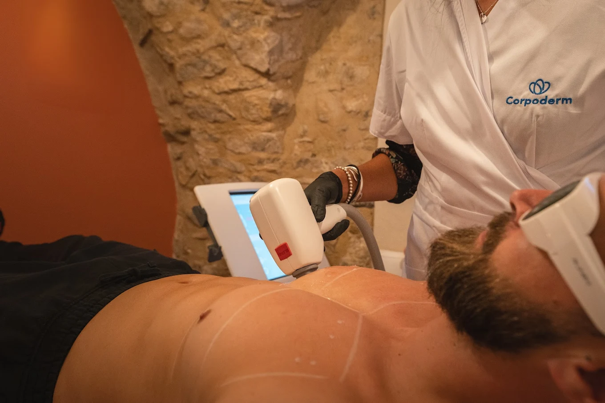
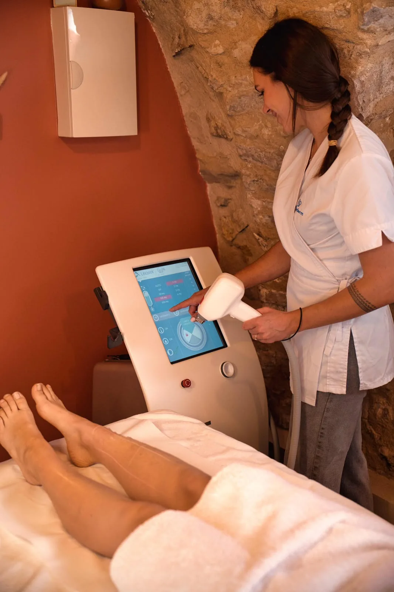
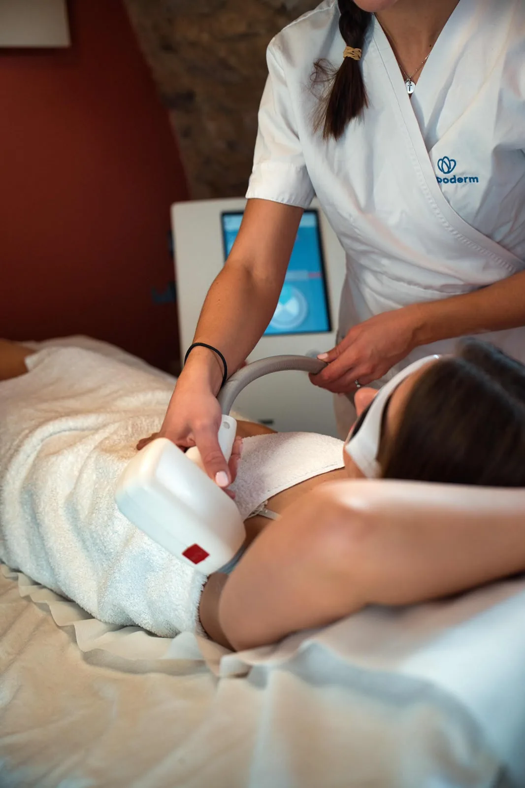
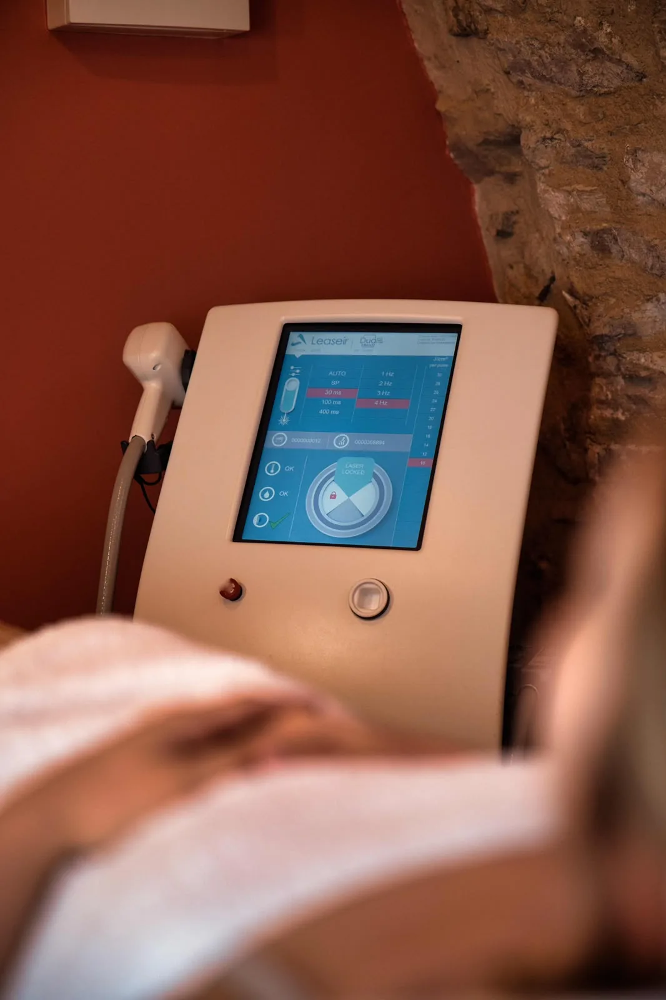

L'épilation laser définitive à Manosque chez LUMIA est réalisée par Margaux, infirmière diplômée d'État formée à l'épilation laser. Elle s'adresse aux femmes comme aux hommes qui veulent en finir durablement avec le rasage et la cire, sur le visage comme sur le corps. Avant la première séance, un bilan personnalisé est offert pour tout achat de séance ou de cure : on examine votre peau et votre poil, on répond à vos questions et on définit ensemble votre protocole.
Comment fonctionne l'épilation laser ?
Le laser cible la mélanine, le pigment qui colore le poil, pour chauffer puis neutraliser le follicule : c'est le principe de la photothermolyse sélective. Plus le poil est foncé et la peau claire, plus le contraste est marqué et plus le traitement est efficace. Comme seul le poil en phase de croissance réagit, plusieurs séances espacées sont nécessaires pour traiter l'ensemble de la pilosité.
Le bilan, étape obligatoire avant la première séance
Chez LUMIA, aucune séance n'est réalisée sans un bilan préalable. Ce rendez-vous comprend un questionnaire de santé, la remise d'une fiche d'information et de consentement, la présentation du laser et un flash test. Il coûte 20 € et il est offert pour tout achat de séance ou de cure. C'est le moment où l'on valide votre éligibilité à l'épilation LASER, où l'on vérifie que votre peau et votre poil sont adaptés, et où l'on construit votre protocole.
À l'issue du diagnostic, une cure peut vous être proposée selon les zones à traiter et le nombre de séances estimé. Elle donne accès à des tarifs avantageux par rapport aux séances à l'unité, et elle est réglable en 3 fois sans frais.

Premier échange gratuit, réservez votre bilan
Quelles zones peut-on traiter ?
Presque toutes les zones du visage et du corps peuvent être traitées, chez les femmes comme chez les hommes. Voici les zones les plus demandées à l'institut.
| Visage | Corps |
|---|---|
| Lèvre supérieure, menton | Aisselles |
| Joues, tempes, inter-sourcils | Maillot (simple, échancré, intégral) |
| Cou | Jambes (demi ou entières) |
| Barbe et oreilles (hommes) | Dos, torse, épaules (hommes) |
Vous retrouvez le détail des tarifs par zone sur notre page tarifs. Pour les zones non listées, le bilan précise le protocole et le prix.

Combien de séances faut-il ?
En moyenne, comptez 8 à 12 séances pour un résultat durable. Le nombre exact dépend de la zone, de la densité et de la couleur du poil, et de votre type de peau. Les zones influencées par les hormones, comme le menton ou le maillot, peuvent en demander davantage. Le bilan permet d'estimer votre protocole, qui reste ajusté séance après séance.
Est-ce que c'est douloureux ?
La sensation ressemble à de petits picotements de chaleur, parfois comparés à un léger claquement d'élastique. Le système de refroidissement intégré au laser apaise la peau pendant la séance et la rend bien supportable.
Le déroulement d'une séance chez LUMIA
Tout commence par le bilan obligatoire décrit plus haut. Une fois le protocole défini, chaque séance suit le même cadre rassurant.
- Port des lunettes de protection oculaire pendant toute la durée de la séance.
- Rasage préalable de la zone (la veille ou sur place) pour que le laser agisse sur la racine.
- Passage du laser, avec refroidissement, de 10 minutes à 1h30 selon la zone.
- Conseils d'après-séance et planification de la séance suivante.

Le laser convient-il à tous les types de peau ?
Le laser diode utilisé à l'institut est adapté à de nombreux phototypes. Quelques règles s'appliquent toutefois : une peau récemment bronzée nécessite de reporter la séance, et les poils blancs, blonds, roux ainsi que le duvet ne contiennent pas assez de mélanine pour réagir. Le bilan vérifie l'adéquation entre votre pilosité, votre peau et le traitement.

Avant et après la séance
Quelques précautions simples garantissent l'efficacité et la sécurité du traitement.
- Ne pas s'exposer au soleil, aux UV ni à l'autobronzant 10 jours avant et 10 jours après la séance.
- Pas de prise de médicament photosensibilisant 7 jours avant et 7 jours après la séance.
- Pas de déodorant sur les aisselles le jour de la séance.
- Ne pas épiler à la cire, à la pince ni à l'épilateur entre les séances : seul le rasage est autorisé.
- Apaiser la peau après la séance, par exemple avec un gel d'aloe vera, et appliquer une protection solaire élevée sur les zones exposées.
Questions fréquentes sur l'épilation laser
Combien de séances faut-il ?
En moyenne 8 à 12 séances selon la zone, la couleur du poil et votre type de peau. Le visage et les zones hormonales en demandent souvent davantage. Le bilan précise votre protocole.
Est-ce que ça fait mal ?
La sensation ressemble à de petits picotements de chaleur. Le refroidissement du laser rend la séance bien supportable.
Le laser marche-t-il sur tous les poils ?
Le laser cible la mélanine, donc le poil foncé. Les poils blancs, blonds, roux et le duvet ne réagissent pas. Le bilan vérifie que votre pilosité est adaptée.
Et sur peau bronzée ou mate ?
Une peau récemment bronzée doit attendre que le bronzage s'estompe pour éviter tout risque. On évite soleil, UV et autobronzant 10 jours avant et 10 jours après.
Quel espacement entre les séances ?
En général 6 à 8 semaines au début, puis on espace au fil de la repousse. L'intervalle est ajusté à chaque séance.
L'épilation est-elle vraiment définitive ?
On parle d'épilation durable : la grande majorité des poils traités ne repoussent plus. Quelques poils peuvent réapparaître plus fins ; une séance d'entretien suffit souvent.
Y a-t-il des contre-indications ?
Grossesse, certaines affections de la peau, prise de médicaments photosensibilisants ou bronzage récent peuvent reporter ou écarter une séance. Le bilan préalable fait le point.
Comment se passe la première fois ?
On commence par un bilan offert : examen de la peau et du poil, réponses à vos questions, définition du protocole. Les lunettes de protection sont portées pendant toute la séance.
Épilation laser dans tout le territoire de Manosque
L'institut accueille aussi les clientes et clients des communes voisines. Découvrez nos pages dédiées à l'épilation laser à Sainte-Tulle, Pierrevert, Volx, Villeneuve, Forcalquier, Gréoux-les-Bains, Oraison, Valensole et Sisteron. Pour faire connaissance avec la praticienne, rendez-vous sur la page à propos.
Information réglementaire. L'épilation laser à visée non thérapeutique pratiquée chez LUMIA est réalisée par une infirmière diplômée d'État titulaire de l'attestation de formation prévue par l'arrêté du 19 février 2025 〔numéro et organisme de l'attestation à fournir〕. La protection oculaire est obligatoire pendant toute la séance. Comme tout traitement de la peau, l'épilation laser comporte des contre-indications et des risques qui sont examinés lors du bilan ; une fiche d'information et de consentement est signée avant la première séance. Aucun résultat n'est garanti.